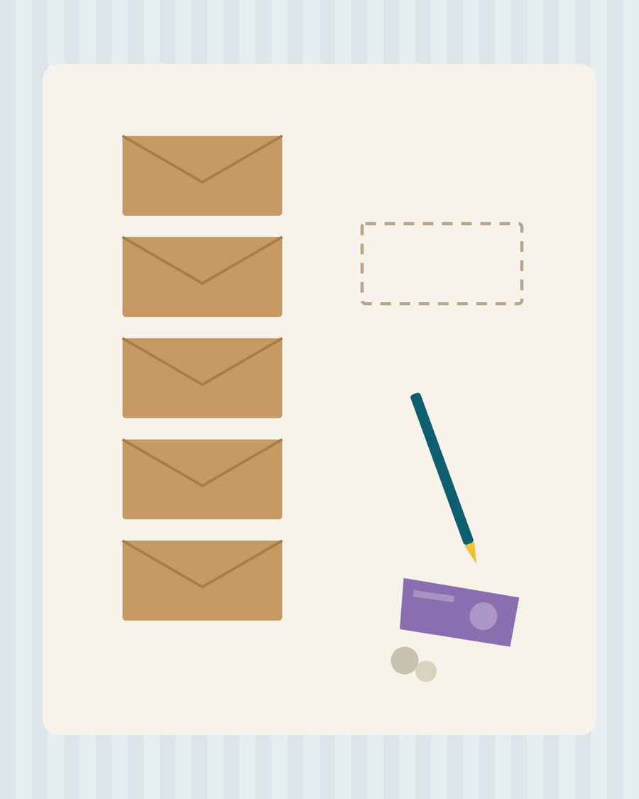
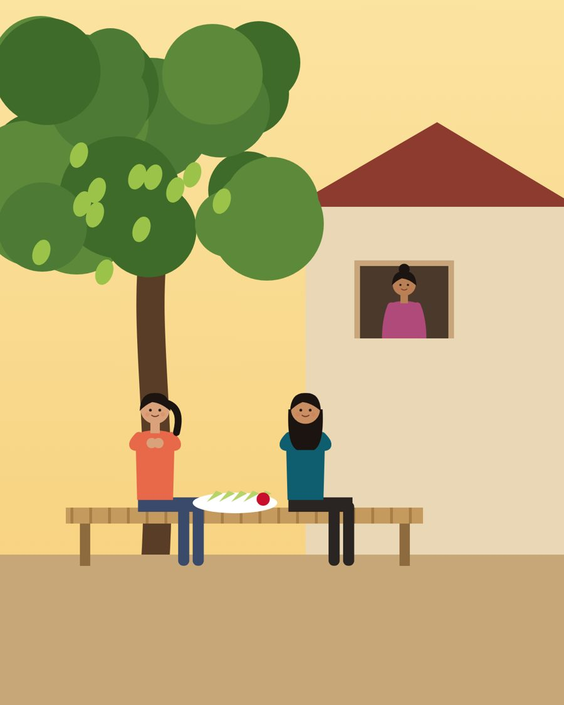

อ่านก่อน จ่ายตามกำลังRead first. Pay what you want.
“Pool open. Can swim.”มะนาวพูดภาษาอังกฤษแบบโรงแรม เหมือนคนไทยอีกหลายล้านคน
นิยายสองภาษาที่เริ่มจากภาษาอังกฤษที่คุณพูดอยู่แล้ว ภาษาไทยเกือบทั้งเล่มในบทแรก แล้วภาษาอังกฤษค่อยๆ เพิ่มขึ้นจนคุณไม่ทันรู้ตัว
A bilingual novel that starts from the English you already speak. The first chapters are almost all Thai; the English grows until you stop noticing it.
ทั้งเล่ม พร้อมภาพประกอบ 32 ภาพ · 254 หน้า · 14 MB · สมุดแบบฝึกหัด 125 หน้า · ไม่ต้องสมัครThe whole book with 32 illustrations · 254 pages · 14 MB · workbook 125 pages · no sign-up
หนังสือเล่มนี้ใช้ระบบความไว้ใจ อ่านวิธีจ่ายด้านล่างThis book runs on the honor system. How it works is below.

เรื่องเริ่มต้นอย่างนี้
How the story begins

1 · วันรับปริญญา
The Graduation
ครอบครัวทั้งบ้านวิ่งผิดประตู พ่อในสูทยืมที่ใหญ่เกินตัว และนักท่องเที่ยวที่ขอให้มะนาวถ่ายรูป แต่เธอพูดไม่ออกThe whole family runs to the wrong gate, Father wears a borrowed suit far too big, and a tourist asks Lemon to take a photo. She freezes.

2 · หนี้
The Debt
หนี้นอกระบบที่พ่อกู้ทีละนิดมาหลายปี ค่าเทอม ค่ารถ ค่างวดบ้าน แล้วน้ำก็ท่วมอู่ ซองเงินเดือนห้าซอง แอโรบิกที่สวนธารา และข่าวลือว่าใส่ดำแปลว่าโสดYears of small loans from a lender, for school fees, bus fare and the mortgage, then a flood in the workshop. Five payday envelopes, aerobics in Thara Park, and the rumor that black means single.

3 · ผู้ชายที่พูดแทนเธอ
The Man Who Spoke For Her
เบียร์สอนเสียงตัวอักษรใต้ต้นมะม่วง โรเบิร์ตจ่ายหนี้สามแสนในหนึ่งนาที และบุญคุณที่ไม่มีวันหมดBeer teaches letter sounds under the mango tree, Robert pays a 300,000-baht debt in one minute, and a debt of gratitude that never ends.
ทำไมอ่านแล้วได้ผล
Why it works
ระบบความไว้ใจ
The honor system
อ่านก่อน แล้วค่อยตัดสินใจ ถ้าการจ่ายเงินเป็นภาระสำหรับคุณ หนังสือเล่มนี้เป็นของคุณ อ่านได้เลยไม่ต้องจ่ายRead first, then decide. If paying would be a hardship for you, the book is yours. Read it and keep it.
ถ้าคุณพอมีกำลัง และหนังสือช่วยคุณได้ ช่วยจ่ายเท่าไหร่ก็ได้ตามใจ ผู้เขียนไม่ได้หวังกำไร แค่ไม่อยากขาดทุน เงินที่คุณจ่ายจะช่วยดูแลเว็บไซต์นี้ ขยายให้มีบทเรียน เสียง และวิดีโอมากขึ้น และช่วยให้มะนาวเล่มต่อๆ ไปได้เกิดขึ้นจริงIf you can afford it and the book helps you, please pay whatever you want. The author is not trying to make a profit, only not to lose money. What you pay keeps this website running, helps it grow with more lessons, audio and video, and helps the next Lemon books get made.
ได้หนังสือมาจากเพื่อนหรือจากนามบัตร ก็ใช้ระบบเดียวกัน สแกนพร้อมเพย์ด้วยแอปธนาคารไหนก็ได้Got the book from a friend or from a card? Same system. Scan the PromptPay code with any Thai banking app.
เงินของคุณจะสร้างเล่มต่อไป
What your payment makes next
มะนาวยังมีอีกเก้าเรื่อง เดินทาง กินข้าว ช้อปปิ้ง ไปหาหมอ ทำงาน งานแต่ง และอีกมาก ปกพร้อมแล้ว แต่ละเล่มยังต้องเขียน แปล วาดภาพ และอัดเสียง เงินที่คุณจ่ายตามกำลังคือสิ่งที่ทำให้เล่มเหล่านี้เกิดขึ้นLemon has nine more stories: travel, restaurants, shopping, the doctor, work, a wedding and more. The covers are ready. Each book still has to be written, translated, illustrated and recorded. What you choose to pay is what makes them happen.


เมื่อเล่มไหนเสร็จ จะขึ้นให้ดาวน์โหลดที่หน้านี้ ระบบเดียวกัน อ่านก่อน จ่ายตามกำลังWhen each book is finished, it will be available on this page, on the same system: read first, pay what you want.
ช่วยเขียนเรื่องต่อไปของมะนาว
Help write what happens next
อยากให้มะนาวไปไหน เจอใคร หรือเจอเรื่องอะไรในเล่มต่อไป เล่าให้ฟังหน่อย ถ้าความคิดของคุณได้อยู่ในหนังสือ ชื่อของคุณจะอยู่ในหน้าขอบคุณของเล่มนั้นด้วย มาทำให้มะนาวเป็นของคุณกันWhere should Lemon go next? Who should she meet? What should go wrong, or right? Tell me. If your idea goes into a book, your name goes into that book’s credits. Make Lemon your own.
ยินดีรับทุกความเห็นและคำแนะนำ ทั้งเรื่องเนื้อเรื่อง ภาษาไทย ภาษาอังกฤษ ตอนที่ชอบ ตอนที่เบื่อ หรืออะไรก็ได้ที่อยากให้ปรับAll comments and suggestions are welcome: the story, the Thai, the English, the parts you loved, the parts that dragged, anything you would change.